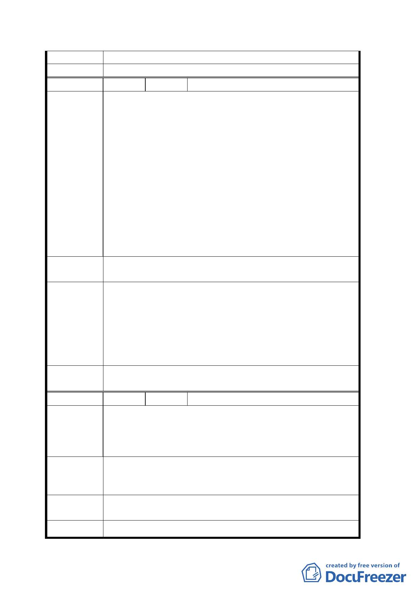

行辦理。
委員會決議 同意依專案小組 94.4.14 審查結論辦理。
編 號 ４ 陳情人 高喜雄
1.該地段年久受 鈞府開闢垃圾場及焚化爐並列入保護區
影響該地區地價一落千丈，無人問津，損失慘重。此次
鈞府實施變更該地區主要計畫乃是政府一大德政亦是回
饋民眾良策。
2.富德段三小段二三○號〈地號〉後面，雖斜度稍微偏高，
但未超過斜度三十，而且該地區位於後面是有乙處洞窟
陳 情 理 由 可將高處土方推平，即便為斜度１０以下之平地，絕對
無影響水土保持，地質堅固平面土地遺漏，未蒙列入，
實欠公允。
3.依據實地勘查結果二三○地號地勢靠路邊及靠山各佔乙
半，若靠山部分斜度過高，難予開發，最起碼靠路邊部
分乃屬平地〈旱２３１、旱２３２、林２３３直線南下
連接，及旱２３０劃為中線為界〉。
建議辦法
請將該地段二三○地號惠已納入此次變更文山區木柵路五
段附近地區主要計畫案內。
93.11.11 專案小組會議結論：
原則同意發展局所提方案，惟請對周邊土地坡度 30%以
專 案 小 組 下部分再予檢視，必要時予以納入，微調計畫範圍。
結 論 94.4.14 專案小組會議結論：
同意發展局所提方案及修正範圍，坡度 30%以下範圍重
新檢視納入計劃範圍。
委員會決
議
同意依專案小組 94.4.14 審查結論辦理。
編 號 ５ 陳情人 黃陳錦姬
建議位置：文山區富德二小段２９２地號
陳情理由
建議理由：富德段土地被編定為保護區並興建垃圾掩埋
場、焚化爐及富德公墓居民犧牲很大，應予回
饋。
1. 請擴大商業區及住宅區之範圍。
建 議 辦 法 2. 請在木柵路五段之外側景美溪邊開闢河濱公園及休閒
遊憩區。
專案小組
結論
同編號 2
委 員 會 決 同意依專案小組 94.4.14 審查結論辦理。
七